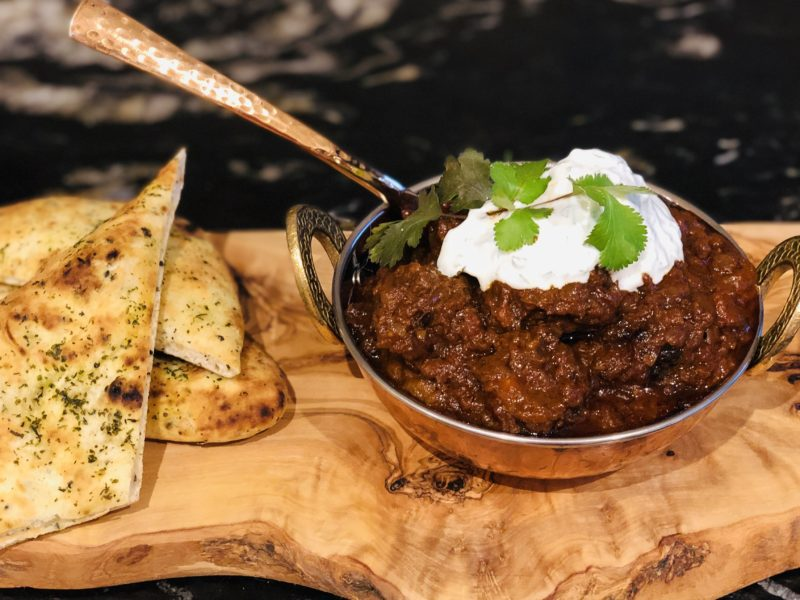

Lamb Korai

Description
This lamb curry recipe is made with a typical onion and ginger base. Using a genrous amount of ghee and lamb, there is an element of rich luxury to the dish. Although simmered with a tomato sauce, spinach is added late on to add a sense of freshness along with green chilli's.
Ingredients
- 250g Ghee
- 3 tablespoons Fresh Coriander (chopped)
- 65g peeled Garlic
- 1 tablespoon Ground Turmeric
- 1 tablespoon Red Chilli Powder
- 350g Fresh Spinach washed with large stalks removed
- 1 tablespoon Ground Cumin
- 4 medium sized Green Chillies with stalks removed
- 1 tablespoon Paprika
- ½ tablespoon Garam Masala
- 550g (1 1/4lb) Chopped onions
- 1 x 400g (140z) Can Chopped Toms
- 50g (2oz) Fresh chopped Ginger
- 1 tbsp. Salt
- 900g Boneless leg or shoulder of Lamb (1½ in) cubes
- 1 tablespoon Ground Coriander
- 120ml water
- A pinch of ground cumin and freshly ground black pepper to serve
Steps
- Heat the ghee in a large, heavy based pan. Add the onions and cook over a medium heat, stirring now and then, for 20 minutes until they are soft and a light brown
- Put the tomatoes, water, ginger and garlic into a liquidizer and blend until smooth. Remove the fried onions with a slotted spoon, add them to the paste and blend briefly until smooth
- Return the puree to the ghee left in the pan and add the lamb and salt. Simmer for 30 minutes, by which time the lamb will be half cooked and the sauce will be well reduced. Stir in the turmeric, chilli powder, cumin, paprika and ground coriander and continue to cook for 30-45 minutes for shoulder or 45-1 hour for leg, until the lamb is tender, adding a little water now and then if the sauce starts to stick
- Meanwhile, put 175g (6oz) of the spinach leaves into a large pan and cook until it has wilted down into the bottom of the pan. Cook for 1 minute, then transfer to the rinsed out liquidizer and blend to a smooth puree. Set aside. Rinse out the liquidizer again and add the green chillies and 2-3 tablespoons of water and blend until smooth. Set aside
- When the lamb is cooked, there should be a layer of ghee floating on the top of the curry. You can either skim it off or leave it there, whichever you prefer. Then stir in the spinach puree and the remaining spinach leaves and cook for 2 minutes
- Now taste the curry and add as much green chilli puree as you wish, according to how hot you like your curries . Simmer for 2 minutes more.
- Stir in the fresh coriander and Garam Masala. Transfer the curry to a serving dish and sprinkle with a little more ground cumin and some freshly ground black pepper just before you take it to the table